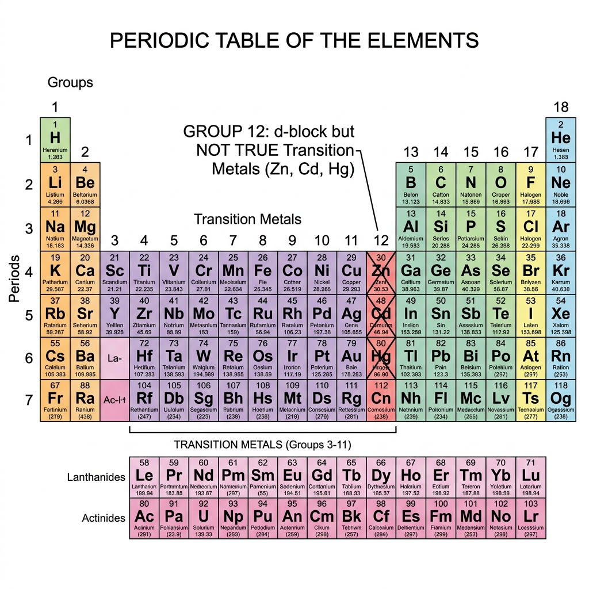
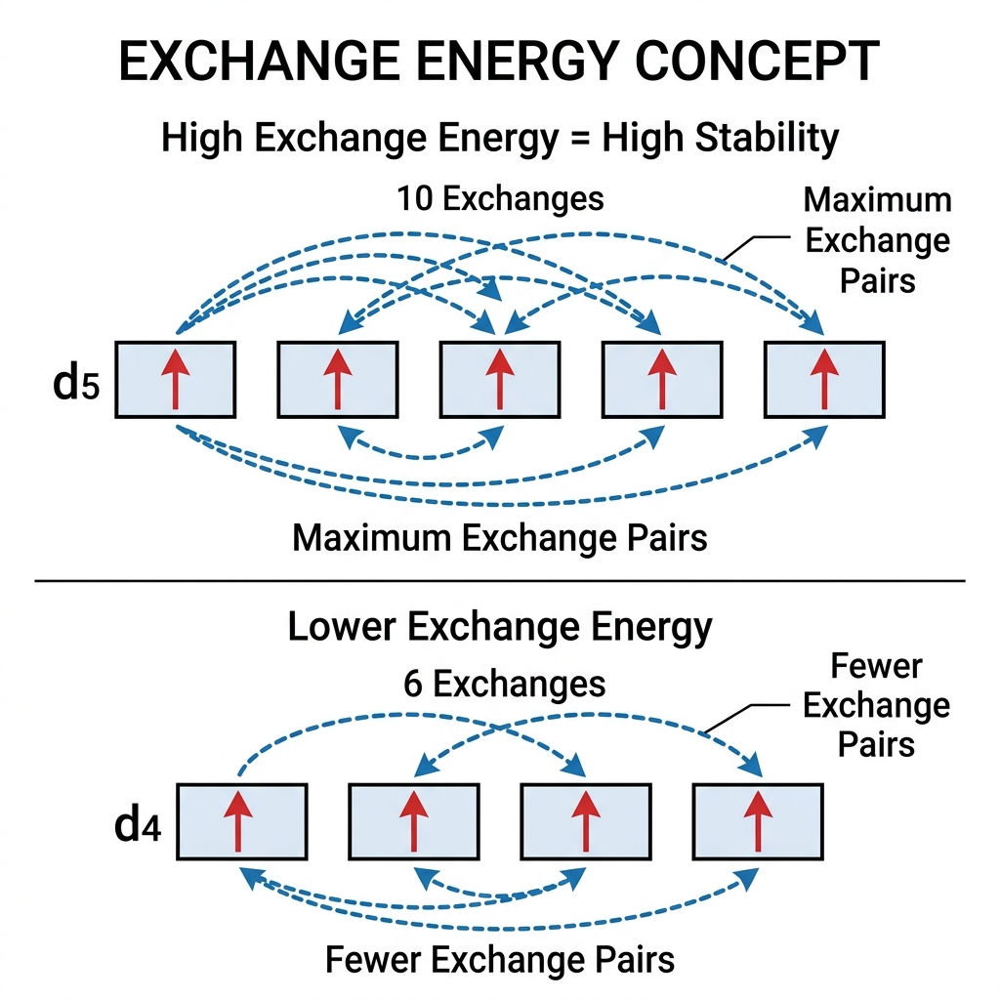
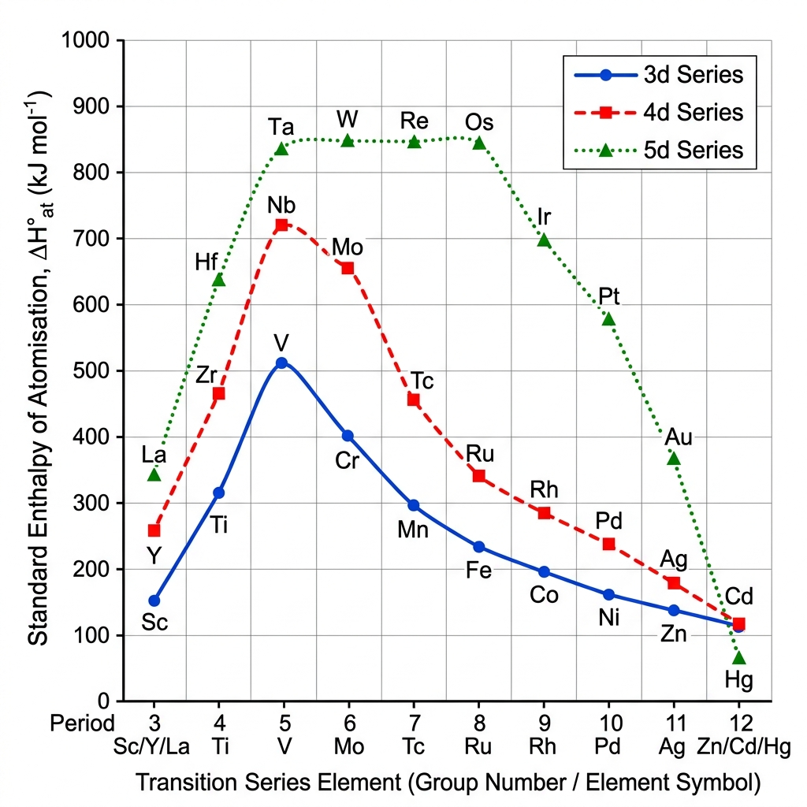
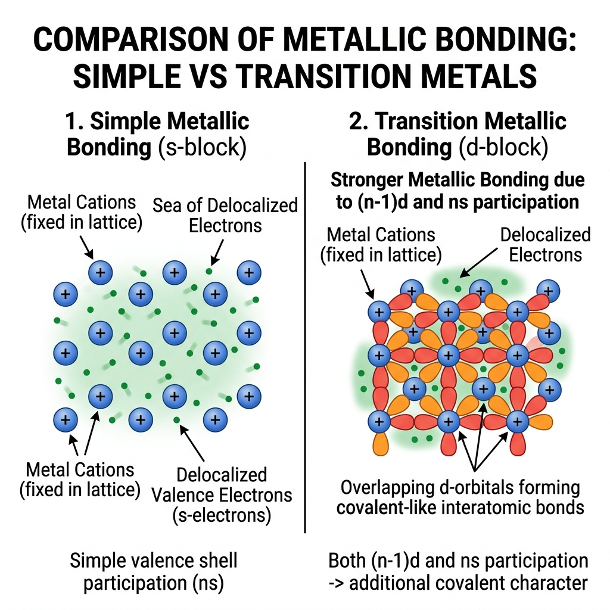
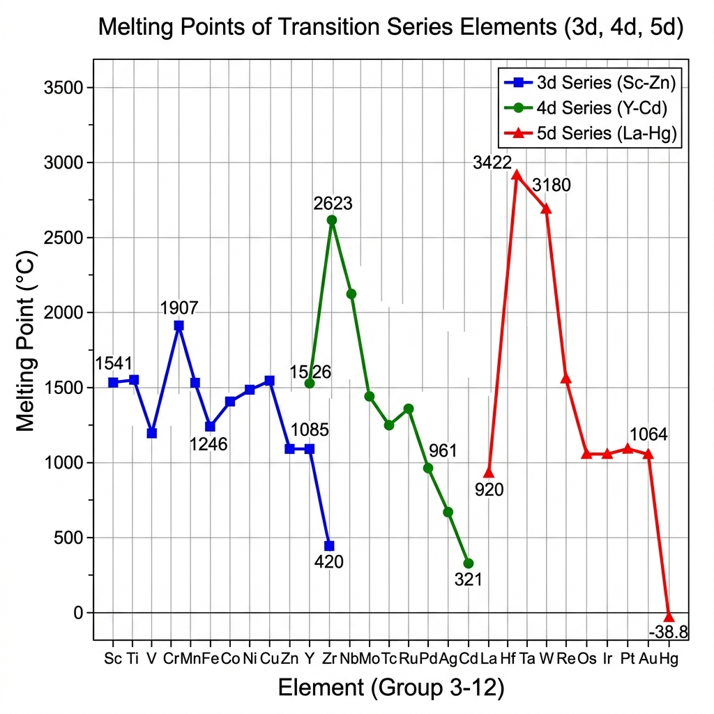
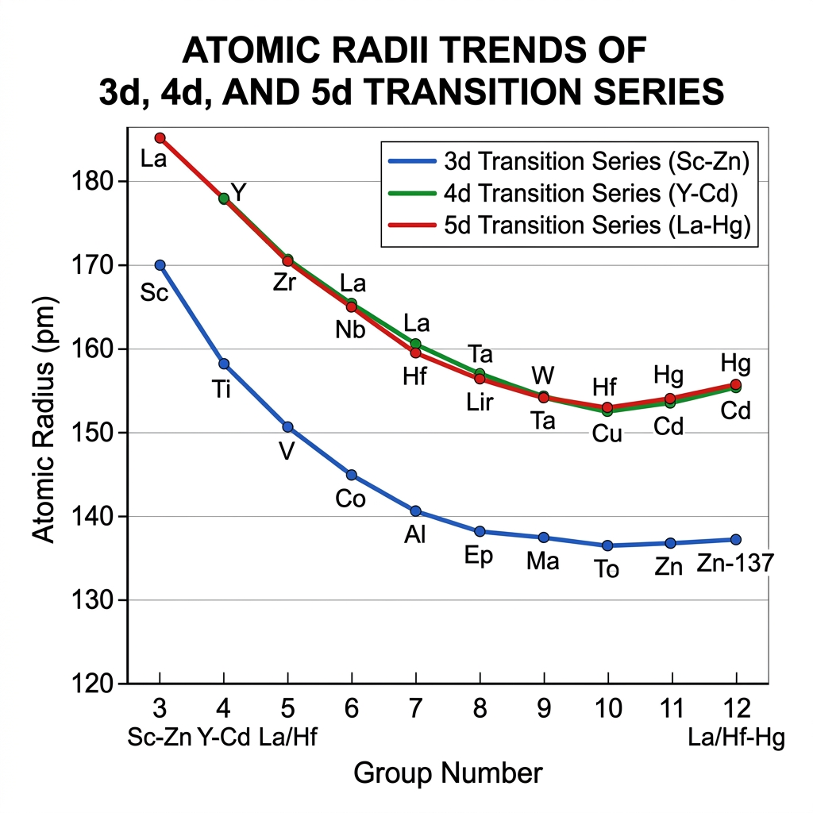
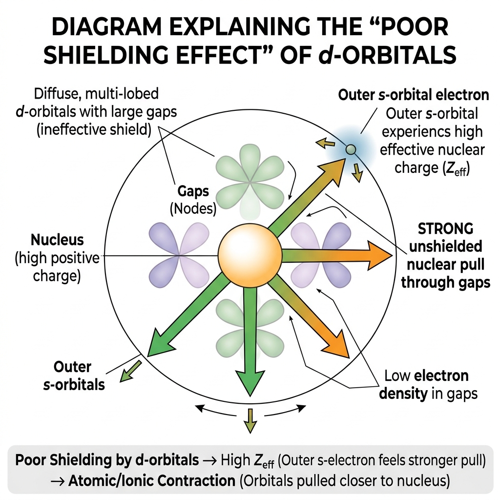
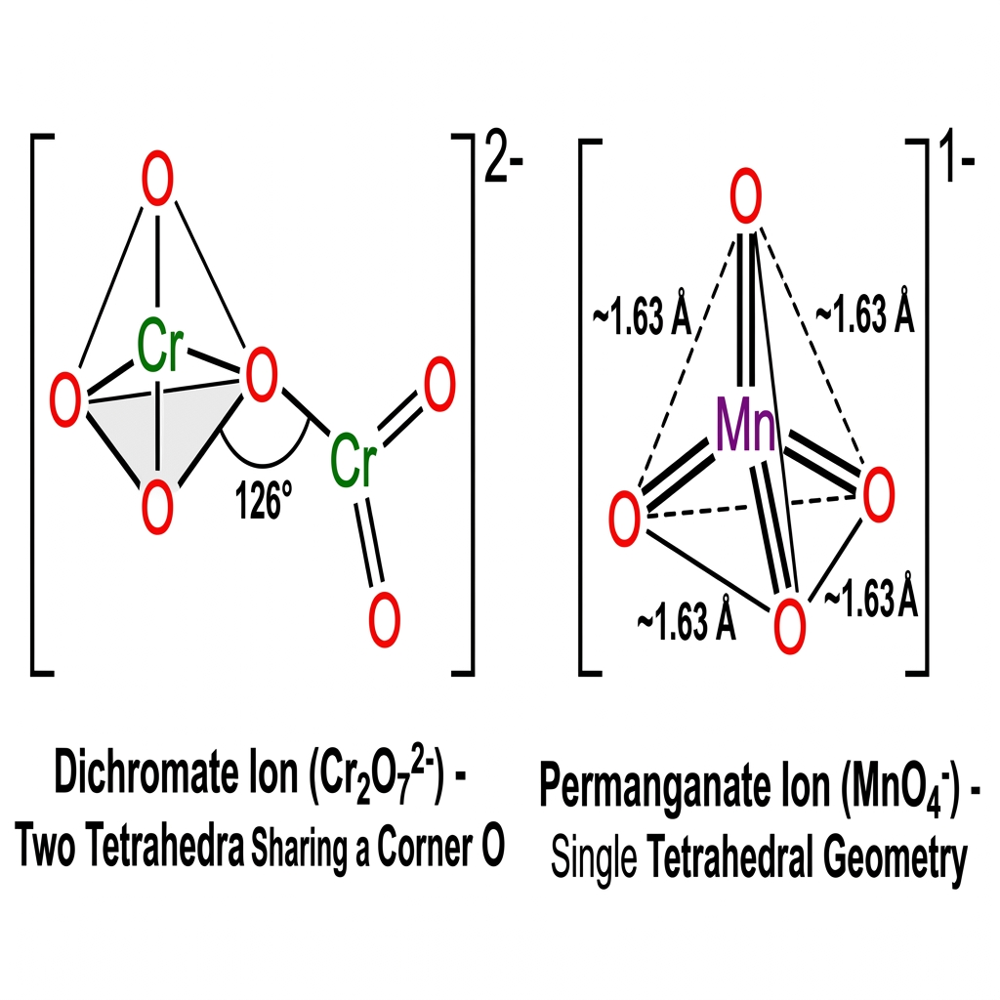
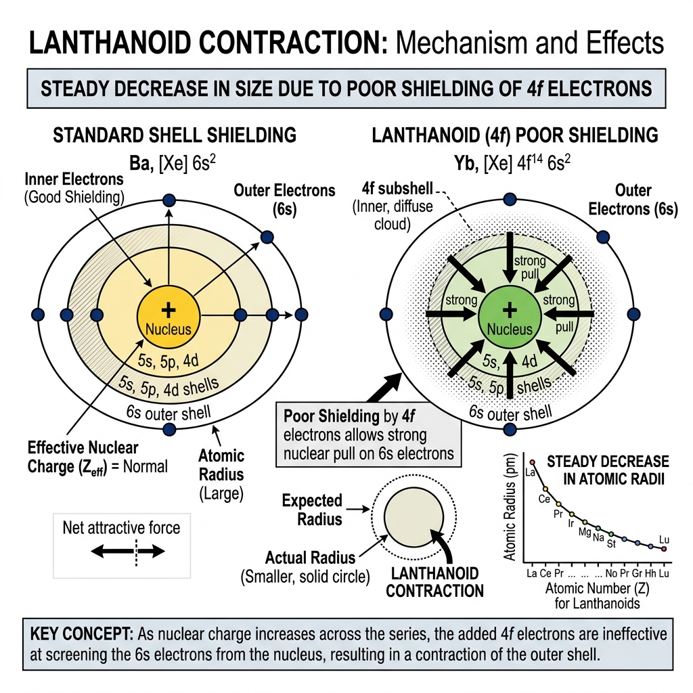

Vardaan Learning Institute
Class 12 Chemistry • Comprehensive Chapter Notes
🌐 vardaanlearning.com📞 9508841336
Chapter 4: The d- and f-Block Elements
Dear Class 12 Student! Welcome to the fascinating world of transition metals. Unlike the predictable s-
and p-blocks, the d-block is full of vibrant colors, complex magnetic properties, and catalytic magic
due to their partially filled d-orbitals. This chapter is highly conceptual. For the Boards and JEE,
mastering the "Why" behind the trends (like Lanthanoid Contraction) and the chemistry of $KMnO_4$ and
$K_2Cr_2O_7$ is absolutely essential. Let's delve into the transition series!
1. Introduction and Position in the Periodic Table
The d-block elements occupy the large middle section of the periodic table, flanking between
the s-block and p-block (Groups 3 to 12). They are characterized by the gradual filling of the inner
$(n-1)d$ orbitals.

Figure 1: Position of d-block elements and the Group 12 exception.
Definition
Transition Elements: Strictly defined by IUPAC as elements that have partially filled d-orbitals in their ground state or in any one of their common oxidation states.
Note: The "d-block" is a broader term (Groups 3-12), while "Transition Metals" is a specific subset based on d-orbital status.
The Non-Typical Transition Elements (Zn, Cd, Hg)
Why are Zinc (Zn), Cadmium (Cd), and Mercury (Hg) NOT considered true transition elements?
1. Ground State: These Group 12 elements have a completely filled $d^{10}$ configuration ($Zn = 3d^{10}4s^2$).
2. Ionic State: Even in their common oxidation states (like $Zn^{2+} = 3d^{10}$), the d-subshell remains fully filled.
Result: Since they do not have a partially filled d-orbital in any state, they do not show typical transition properties (like colored ions or variable oxidation states) and are excluded from the strict IUPAC definition.
The Four Series
- 3d series: Scandium (Sc, 21) to Zinc (Zn, 30) - Most important for syllabus.
- 4d series: Yttrium (Y, 39) to Cadmium (Cd, 48).
- 5d series: Lanthanum (La, 57), Hafnium (Hf, 72) to Mercury (Hg, 80).
- 6d series: Actinium (Ac, 89), Rutherfordium (Rf, 104) to Copernicium (Cn, 112).
Practice Problem 1
Question: Silver (Ag, Z=47) has a completely filled 4d orbital ($4d^{10} 5s^1$) in its
ground state. How can you justify that it is a transition element?
Solution:
Although Silver has a completely filled d-orbital in its ground state, it can exhibit a +2 oxidation
state ($Ag^{2+}$) in some of its compounds (like $AgO$). In the +2 state, its configuration becomes
$4d^9$, which is incompletely filled. Therefore, according to the definition, it is a transition
element.
2. Electronic Configuration of d-Block Elements
The general outer electronic configuration is $(n-1)d^{1-10} ns^{1-2}$. The $(n-1)$
indicates that the d-orbitals being filled belong to the penultimate (second to last) shell.
Why the Exceptions? (Reasoning is MUST!)
The unusual configurations of Chromium and Copper arise because
half-filled ($d^5$) and fully-filled ($d^{10}$) states are exceptionally stable due to:
1.
Symmetry: These sets of orbitals are relatively more symmetrical, which leads to lower energy and higher stability.
2.
Exchange Energy: Stability is gained through the maximum possible number of "exchanges" between electrons with parallel spins. Exchange energy is highest when orbitals are half or fully filled.

Visualizing Exchange Energy: High exchanges = High Stability.
The Chromium Case (Cr, Z=24):
Expected: $[Ar] 3d^4 4s^2 \quad \longrightarrow \quad$ Actual:
$[Ar] 3d^5 4s^1$
The Copper Case (Cu, Z=29):
Expected: $[Ar] 3d^9 4s^2 \quad \longrightarrow \quad$ Actual:
$[Ar] 3d^{10} 4s^1$
Filling vs. Emptying (The 4s Rule)
- Filling: According to Aufbau, 4s is filled BEFORE 3d because it has lower energy.
- Emptying (Ionization): Electrons are removed from 4s BEFORE 3d. This is because once the d-orbitals start filling, the 4s orbital shifts slightly higher in energy than the 3d orbital.
Mastery Table 1: Electronic Configurations (3d Series)
| Element |
Symbol |
Z |
4s |
3d |
Configuration |
| Scandium | Sc | 21 | 2 | 1 | $[Ar] 3d^1 4s^2$ |
| Titanium | Ti | 22 | 2 | 2 | $[Ar] 3d^2 4s^2$ |
| Vanadium | V | 23 | 2 | 3 | $[Ar] 3d^3 4s^2$ |
| Chromium | Cr | 24 | 1 | 5 | $[Ar] 3d^5 4s^1$ |
| Manganese | Mn | 25 | 2 | 5 | $[Ar] 3d^5 4s^2$ |
| Iron | Fe | 26 | 2 | 6 | $[Ar] 3d^6 4s^2$ |
| Cobalt | Co | 27 | 2 | 7 | $[Ar] 3d^7 4s^2$ |
| Nickel | Ni | 28 | 2 | 8 | $[Ar] 3d^8 4s^2$ |
| Copper | Cu | 29 | 1 | 10 | $[Ar] 3d^{10} 4s^1$ |
| Zinc | Zn | 30 | 2 | 10 | $[Ar] 3d^{10} 4s^2$ |
Visual Memorization: Configuration Exceptions
Group 1 Exceptions:
Cu, Ag, Au, Pt, Cr
Mnemonic: "Kyu Aage Aau Pitai Karoge"
Group 2 Exceptions:
Nb, Mo, Tc, Ru, Rh
Mnemonic: "Nawab Moth Tac Rukawat Raah"
Special Cases (NCERT Focus):
Pd: $[Kr] 4d^{10} 5s^0$
Pt: $[Xe] 4f^{14} 5d^9 6s^1$
Au: $[Xe] 4f^{14} 5d^{10} 6s^1$
Practice Problem 2
Question: Write the electronic configuration of $Fe^{3+}$ and $Cu^+$ ions. (Atomic numbers:
Fe=26, Cu=29).
Solution:
Rule: When transition metals form ions, the ns electrons are lost FIRST, followed
by the $(n-1)d$ electrons.
1. Fe (Z=26): Ground state is $[Ar] 3d^6 4s^2$.
For $Fe^{3+}$, remove 3 electrons (2 from 4s, 1 from 3d).
Configuration: $[Ar] 3d^5$.
2. Cu (Z=29): Ground state is $[Ar] 3d^{10} 4s^1$.
For $Cu^+$, remove 1 electron (from 4s).
Configuration: $[Ar] 3d^{10}$.
3. General Properties of Transition Elements (Trends and Reasons)
NCERT emphasizes the reasoning behind these trends heavily. Master the "Why".

Figure 1: Trends in Enthalpies of Atomisation of Transition Elements
1. Melting and Boiling Points

Figure 3: Covalent character in Transition Metal bonding (d-d overlap).

Figure 4: Trends in Melting Points of Transition Series
Logic Flow: Melting Points along the 3d Period
Sc → V → Cr
No. of unpaired $e^-$ ↑
↓
M-M Bonding ↑
↓
Attraction ↑
↓
Melting Point ↑
Manganese (Mn)
Typical solid state structure breaks easily.
↓
Anomalous Dip!
Note: MP of Mn < MP of Fe, Co, Ni
Fe → Co → Ni → Cu → Zn
No. of unpaired $e^-$ ↓
↓
M-M Bonding ↓
↓
Attraction ↓
↓
Melting Point ↓
Group Trends & Exceptions:
- Down the group: $Z_{eff} \uparrow$ → $(n-1)d$ electrons have greater tendency to get involved in interatomic bonding → M-M bond strength $\uparrow$ →
MP $\uparrow$ ($3d < 4d < 5d$).
-
Exceptions: In Group 11, $Cu > Au > Ag$. In Group 12, $Zn > Cd > Hg$.
-
NCERT Deep Fact: Samarium (Sm), a lanthanoid, has an anomalously high melting point of
1623 K, behaving more like a typical transition metal.
- Property: Transition metals have very high melting and boiling points (except Group 12).
- Reason (Metallic Bonding): High MPs are due to the involvement of a greater number of electrons from both (n-1)d and ns orbitals in interatomic metallic bonding. The unpaired d-electrons overlap to form covalent-like bonds within the metal lattice.
- The Trend: Melting points rise to a maximum at $d^5$ (middle) because of the maximum number of unpaired d-electrons.
- The Dip (Exception): Manganese (Mn) and Technetium (Tc) show an anomalous dip.
Reason: Their $d^5$ configuration is so exceptionally stable (due to high exchange energy) that the electrons are held tightly by the nucleus and do not participate effectively in delocalized metallic bonding.
Enthalpy of Atomisation ($\Delta H_{at}^\circ$)
This property is directly proportional to the number of unpaired electrons. The more unpaired electrons present, the stronger the interatomic interaction (metallic bond). This explains why Zn, Cd, and Hg have very low enthalpies of atomisation (no unpaired electrons).
Volatile & Noble Metals
Volatile Metals (Zn, Cd, Hg): They have exceptionally low Melting/Boiling points compared to other d-block metals. They show similar properties to Alkaline Earth Metals.
Noble (Non-Reactive) Metals: Cu, Ag, Au, Pt, Hg.

Figure 3: Trends in Atomic Radii of Transition Series
The "Why" behind Atomic Radii
The trend in radii is determined by the tug-of-war between two factors:
1.
Increasing Nuclear Charge ($Z$): Pulls the electron cloud inward (Size $\downarrow$).
2.
Shielding (Screening) Effect: Electrons in the inner $(n-1)d$ orbitals shield the outer $ns$ electrons from the nucleus (Size $\uparrow$).

Poor Shielding by d-electrons leading to atomic contraction.
Critical Reason: The shielding effect of a d-electron is
very poor. Consequently, as we move across the series, the increase in nuclear charge is not fully shielded, resulting in an increase in
Effective Nuclear Charge ($Z_{eff}$), which pulls the orbitals closer and causes the contraction.
Visual Logic Flow: Atomic Radii along the Period
Sc to Cr
Factor 1 ($Z_{eff} \uparrow$) → Size ↓
Factor 2 (Unpaired $e^-$ ↑) → Size ↓
Both factors overlap.
Size ↓
Mn to Ni
$Z_{eff} \uparrow$ tries to ↓ size.
Screening effect ↑ tries to ↑ size.
Both factors oppose.
Size Remains Constant
Ni to Zn
Screening effect dominates over $Z_{eff}$.
Electron-electron repulsion.
Size Increases Rapidly ↑
Lanthanoid Contraction (Crucial Concept)
As we move down a group, radii generally increase. The 4d series is larger than the 3d series. However, the
5d series elements have almost identical radii to the 4d series elements (e.g., Zr and Hf
have almost the same size).
Reason: Before the 5d series begins, the 4f orbitals are filled (the Lanthanoids). The 4f
electrons have a highly diffused shape and offer extremely poor shielding/screening for the
outer electrons. As the nuclear charge increases by 14 units across the lanthanoids, the nucleus pulls the
outer electrons strongly inward. This steady decrease in size is the Lanthanoid
Contraction, which exactly cancels the expected size increase from the 4d to the 5d series.
Practice Problem 3
Question: Zirconium (Zr, Atomic radius 160 pm) and Hafnium (Hf, Atomic radius 159 pm) occur
in the same group but possess almost identical atomic radii. Explain why.
Solution:
This anomaly is due to the Lanthanoid Contraction. Hafnium (5d series) comes
immediately after the 14 lanthanoid elements. The filling of 4f orbitals prior to Hf results in a poor
shielding effect. The resulting strong increase in effective nuclear charge pulls the outer electron
shell inward, contracting the atom's size. This contraction exactly cancels out the normal size increase
expected when moving down a group from Zr (4d) to Hf (5d), resulting in nearly identical atomic radii.
3. Ionization Enthalpies
- General Trend: Generally increases from left to right due to increasing effective
nuclear charge ($Z_{eff}$).
- Reason for Irregularity: The trend is irregular because the addition of d-electrons alters the shielding effect. Removing an electron from the $ns$ orbital is influenced by how well the $(n-1)d$ electrons shield it.
- Board Favorite: Why is the third ionization enthalpy of Manganese (Mn)
exceptionally high compared to Iron (Fe)?
Answer: $Mn^{2+}$ has a stable half-filled $[Ar] 3d^5$ configuration. Removing a third
electron disrupts this extreme stability (loss of exchange energy), requiring a massive amount of energy. Iron ($Fe^{2+}$) is
$3d^6$; removing an electron yields a stable $3d^5$ ($Fe^{3+}$), so its 3rd IE is comparatively lower.
4. Oxidation States
Mastery Table 2: Oxidation States of 3d Series
| Element |
Oxidation States |
| Sc | +3 |
| Ti | +2, +3, +4 |
| V | +2, +3, +4, +5 |
| Cr | +2, +3, +4, +5, +6 |
| Mn | +2, +3, +4, +5, +6, +7 |
| Fe | +2, +3, +4, +6 |
| Co | +2, +3, +4 |
| Ni | +2 |
| Cu | +1, +2 |
| Zn | +2 |
*Bold values indicate the most common/stable oxidation states.
- Transition metals show a vast variety of oxidation states.
- Reason (Small Energy Gap): The energy difference between the $(n-1)d$ and $ns$ orbitals is very small. Therefore, both sets of electrons can be used for bond formation.
- Maximum Oxidation State: Occurs in the middle of the series, corresponding to the sum
of all s and d electrons. (e.g., Manganese shows up to +7 in $KMnO_4$).
Acidic/Basic Nature of Oxides
The nature of a transition metal oxide depends entirely on its oxidation state.
- Lower oxidation states (+2, +3): The metal has low charge, acts purely metallic, forms
ionic bonds, and the oxides are Basic (e.g., $MnO$).
- Higher oxidation states (+6, +7): The highly charged metal highly polarizes the oxygen,
forming covalent bonds. The oxides are highly Acidic (e.g., $Mn_2O_7$, $CrO_3$).
5. Standard Electrode Potentials ($E^\circ$)
The standard electrode potential ($E^\circ$) of a metal is NOT determined by a single factor. It is the result of a competition between three energy terms:
The E° Energy Balance
$E^\circ$ (Total) = $\Delta H_{sub} + IE + \Delta H_{hyd}$
1. Sublimation ($\Delta H_{sub}$): Solid metal to gaseous atoms (Energy required $+$).
2. Ionisation ($IE$): Gaseous atoms to ions (Energy required $+$).
3. Hydration ($\Delta H_{hyd}$): Ions to aqueous state (Energy released $-$).
Key: For a metal to be a strong reducing agent (negative $E^\circ$), the Hydration Energy released must be large enough to compensate for the energy required for Sublimation and Ionisation.
Mastery Table 3: E° Values for 3d Series
| Element |
E° (M²⁺/M) (V) |
E° (M³⁺/M²⁺) (V) |
| Ti | -1.63 | -0.37 |
| V | -1.18 | -0.26 |
| Cr | -0.90 | -0.41 |
| Mn | -1.18 | +1.57 |
| Fe | -0.44 | +0.77 |
| Co | -0.28 | +1.97 |
| Ni | -0.25 | - |
| Cu | +0.34 | - |
| Zn | -0.76 | - |
*Cu is the only 3d metal with a positive E° value.
The trend in $M^{2+}/M$ standard electrode potentials is highly irregular. This is because $E^\circ$ depends
on the sum of three enthalpies: Sublimation Enthalpy, Ionization Enthalpy, and Hydration Enthalpy.
Practice Problem 4
Question: Why is the $E^\circ$ value for the $Cu^{2+}/Cu$ couple positive ($+0.34\text{
V}$), making it the only metal in the 3d series unable to liberate $H_2$ gas from acids?
Solution:
For a metal to be a strong reducing agent (negative $E^\circ$), the energy released by hydrating its
ions must compensate for the energy required to vaporize and ionize it.
Copper has a very high enthalpy of sublimation and a high ionization enthalpy. The hydration enthalpy of
$Cu^{2+}$ is simply not negative (exothermic) enough to compensate for this massive energy requirement.
Thus, the overall process is energetically unfavorable, resulting in a positive $E^\circ$ value.
Practice Problem 5
Question: $Cr^{2+}$ is a strong reducing agent whereas $Mn^{3+}$ is a strong oxidizing
agent, even though both have a $d^4$ electronic configuration. Explain.
Solution:
- $Cr^{2+}$ is a reducing agent because it wants to lose an electron (oxidize) to become $Cr^{3+}$. Why?
The $Cr^{3+}$ ion has a $d^3$ configuration, which corresponds to a exactly half-filled $t_{2g}$ level
in an octahedral crystal field, providing exceptional stability in aqueous solutions.
- $Mn^{3+}$ is an oxidizing agent because it wants to gain an electron (reduce) to become $Mn^{2+}$.
Why? The $Mn^{2+}$ ion has a $d^5$ configuration, which is exactly half-filled and thus exceptionally
stable.
4. Important Characteristics and Phenomena
1. Magnetic Properties
- Diamagnetic: Substances repelled by a magnetic field. All electrons are paired.
- Paramagnetic: Substances attracted by a magnetic field. Caused by the presence of
unpaired electrons. Transition metals are mostly paramagnetic.
The magnetic moment is calculated using the "Spin-Only" Formula:
Magnetic Moment ($\mu$)
$$\mu = \sqrt{n(n+2)} \text{ BM}$$
Where $n$ = number of unpaired electrons.
BM stands for Bohr Magneton, the unit of magnetic moment.
Practice Problem 6
Question: Calculate the "spin-only" magnetic moment of an $M^{2+}(aq)$ ion where the atomic
number of the metal $M$ is 27.
Solution:
1. Atomic number 27 corresponds to Cobalt (Co).
2. Ground state electronic configuration of Co is $[Ar] 3d^7 4s^2$.
3. For $Co^{2+}$ ion, remove 2 electrons from 4s. Configuration becomes $[Ar] 3d^7$.
4. Fill the 5 d-orbitals using Hund's Rule: $\uparrow\downarrow \quad \uparrow\downarrow \quad \uparrow
\quad \uparrow \quad \uparrow$.
5. Number of unpaired electrons ($n$) = 3.
6. Magnetic moment $\mu = \sqrt{n(n+2)} = \sqrt{3(3+2)} = \sqrt{15} \approx \mathbf{3.87 \text{ BM}}$.
2. Formation of Coloured Ions
Mastery Table 4: Colors of Hydrated Ions (Aqueous)
| Ion |
Configuration |
Colour |
| $Sc^{3+}$ | $3d^0$ | Colourless |
| $Ti^{3+}$ | $3d^1$ | Purple |
| $V^{4+}$ | $3d^1$ | Blue |
| $V^{3+}$ | $3d^2$ | Green |
| $V^{2+}$ | $3d^3$ | Violet |
| $Mn^{3+}$ | $3d^4$ | Violet |
| $Mn^{2+}$ | $3d^5$ | Pink |
| $Fe^{3+}$ | $3d^5$ | Yellow |
| $Fe^{2+}$ | $3d^6$ | Green |
| $Co^{2+}$ | $3d^7$ | Pink |
| $Ni^{2+}$ | $3d^8$ | Green |
| $Cu^{2+}$ | $3d^9$ | Blue |
| $Zn^{2+}$ | $3d^{10}$ | Colourless |
Most transition metal compounds are highly colored.
Reason: When an anion or ligand approaches the transition metal ion, the 5 degenerate
d-orbitals split into two sets of different energy levels. When visible light falls on the ion, an unpaired
d-electron absorbs a specific wavelength (energy) and jumps from the lower d-level to the higher d-level.
This is called a d-d transition. The transmitted (unabsorbed) light gives the compound its
complementary color.
Condition: There MUST be vacant spaces in the d-orbitals for the electron to jump into, and there
MUST be an unpaired electron to jump. Ions with $d^0$ (e.g., $Sc^{3+}, Ti^{4+}$) or completely filled
$d^{10}$ (e.g., $Zn^{2+}, Cu^+$) cannot undergo d-d transitions and are colorless/white.
Practice Problem 7
Question: Out of $Ti^{3+}$ and $Ti^{4+}$, which one will be colored in an aqueous solution
and why? (Atomic number of Ti = 22).
Solution:
1. Electronic configuration of Ti is $[Ar] 3d^2 4s^2$.
2. For $Ti^{3+}$: Configuration is $[Ar] 3d^1$. It has one unpaired electron. It can undergo a d-d
transition by absorbing light from the visible region. Thus, $Ti^{3+}$ will be colored
(it is actually purple).
3. For $Ti^{4+}$: Configuration is $[Ar] 3d^0$. It has zero d-electrons. No d-d transition is possible.
Thus, $Ti^{4+}$ will be colorless.
3. Formation of Complex Compounds
Transition metals form a vast array of complex coordination compounds (e.g., $[Fe(CN)_6]^{3-}$). They do this
because:
1. They have a comparatively smaller ionic size and high nuclear charge density.
2. They have vacant $(n-1)d$ orbitals of appropriate energy to accept lone pairs of
electrons donated by ligands.
4. Catalytic Properties
Many transition metals and their compounds act as excellent catalysts (e.g., Iron in the Haber process for
ammonia, $V_2O_5$ in the Contact process for sulfuric acid).
Reasons:
1. Their ability to show variable oxidation states allows them to form unstable
intermediate compounds with reactants, creating a low-energy pathway.
2. Their solid lattice provides a large surface area with free valencies for reactant molecules to adsorb
onto, bringing them closer together.
Deep Cut: Iodide-Persulphate Reaction
The reaction between iodide and persulphate ions is catalyzed by Iron(III) ions:
$2I^- + S_2O_8^{2-} \xrightarrow{Fe^{3+}} I_2 + 2SO_4^{2-}$
Mechanism: $Fe^{3+}$ oxidizes $I^-$ to $I_2$ and gets reduced to $Fe^{2+}$. Then $Fe^{2+}$ reduces $S_2O_8^{2-}$ back to $SO_4^{2-}$ and returns to $Fe^{3+}$.
5. Formation of Interstitial Compounds
Transition metal crystal lattices have tiny empty spaces (interstices) between the large metal atoms. Very
small non-metal atoms like Hydrogen (H), Carbon (C), or Nitrogen (N) get trapped in these spaces, forming
non-stoichiometric compounds.
Examples: $TiC, Mn_4N, Fe_3H, VH_{0.56}, TiH_{1.7}$.
Properties: They are extraordinarily hard (some approach diamond's hardness), have
extremely high melting points (higher than pure metal), retain metallic conductivity, and become chemically
inert.
6. Alloy Formation
An alloy is a solid solution of two or more metals. Transition metals readily form alloys with each other
(like Brass = Cu+Zn, Bronze = Cu+Sn).
Reason: Because their atomic radii are very similar (difference is less
than 15%), atoms of one transition metal can easily replace atoms of another transition metal in the solid
crystal lattice without severely distorting it.
5. Important Compounds of Transition Elements (High Priority)
A. Potassium Dichromate ($K_2Cr_2O_7$)
It is a bright orange crystalline solid, widely used as a primary standard and powerful oxidizing agent.
Preparation from Chromite Ore ($FeCr_2O_4$)
Step 1: Roast finely powdered chromite ore with Sodium Carbonate ($Na_2CO_3$) in the
presence of excess air to form yellow Sodium Chromate.
$4FeCr_2O_4 + 8Na_2CO_3 + 7O_2 \longrightarrow 8Na_2CrO_4 + 2Fe_2O_3 + 8CO_2$
Step 2: The yellow solution of sodium chromate is filtered and acidified with dilute
sulfuric acid to convert it into orange Sodium Dichromate.
$2Na_2CrO_4 + 2H^+ \longrightarrow Na_2Cr_2O_7 + 2Na^+ + H_2O$
Step 3: Sodium dichromate is highly soluble. We treat it with Potassium Chloride ($KCl$).
Because Potassium Dichromate is less soluble than the sodium salt, it crystallizes out as orange crystals
upon cooling.
$Na_2Cr_2O_7 + 2KCl \longrightarrow K_2Cr_2O_7(s) + 2NaCl$
Chromate-Dichromate pH Equilibrium:
Chromate ($CrO_4^{2-}$, Yellow) and Dichromate ($Cr_2O_7^{2-}$, Orange) are interconvertible depending on
the pH of the solution. The oxidation state of Chromium is +6 in both! No redox happens
here.
In Acidic medium (Low pH): $2CrO_4^{2-} + 2H^+ \rightleftharpoons Cr_2O_7^{2-} + H_2O$
(Turns Orange)
In Basic medium (High pH): $Cr_2O_7^{2-} + 2OH^- \rightleftharpoons 2CrO_4^{2-} + H_2O$
(Turns Yellow)

Figure 4: Structures of the Dichromate ($Cr_2O_7^{2-}$) and Permanganate ($MnO_4^-$) Ions
Structure of the Dichromate Ion ($Cr_2O_7^{2-}$)
The dichromate ion consists of two $CrO_4$ tetrahedra sharing a single corner. The Cr–O–Cr bond angle is $126^\circ$.
Oxidizing Properties of $K_2Cr_2O_7$
In acidic medium, Dichromate acts as a strong oxidizing agent, getting reduced to $Cr^{3+}$ (Green).
Standard Reduction Half-Reaction:
$Cr_2O_7^{2-} + 14H^+ + 6e^- \longrightarrow 2Cr^{3+} + 7H_2O$
Important Oxidations (Memorize the conversion):
- Iodide to Iodine: $6I^- \longrightarrow 3I_2 + 6e^-$
- Hydrogen Sulfide to Sulfur: $3H_2S \longrightarrow 3S + 6H^+ + 6e^-$
- Tin(II) to Tin(IV): $3Sn^{2+} \longrightarrow 3Sn^{4+} + 6e^-$
- Iron(II) to Iron(III): $6Fe^{2+} \longrightarrow 6Fe^{3+} + 6e^-$
B. Potassium Permanganate ($KMnO_4$)
A dark purple, almost black crystalline solid. It is an exceptionally powerful oxidizing agent.
Preparation from Pyrolusite Ore ($MnO_2$)
Step 1: Fuse $MnO_2$ with an alkali (KOH) in the presence of oxygen or an oxidizing agent
(like $KNO_3$) to form Potassium Manganate (Dark Green).
$2MnO_2 + 4KOH + O_2 \longrightarrow 2K_2MnO_4 + 2H_2O$
Step 2: The green manganate ion ($MnO_4^{2-}$) undergoes disproportionation in a neutral or
acidic solution to give the purple permanganate ion ($MnO_4^-$).
$3MnO_4^{2-} + 4H^+ \longrightarrow 2MnO_4^- + MnO_2 + 2H_2O$
Oxidizing Properties of $KMnO_4$
The oxidizing power depends on the medium.
1. In Acidic Medium: $Mn$ reduces from +7 to +2. (Colorless $Mn^{2+}$).
$MnO_4^- + 8H^+ + 5e^- \longrightarrow Mn^{2+} + 4H_2O$
- Oxidizes Oxalate to Carbon Dioxide: $5C_2O_4^{2-} \longrightarrow 10CO_2 + 10e^-$
- Oxidizes $Fe^{2+}$ to $Fe^{3+}$.
- Oxidizes Iodide ($I^-$) to Iodine ($I_2$).
2. In Neutral or Faintly Alkaline Medium: $Mn$ reduces from +7 to +4. (Brown solid
$MnO_2$).
$MnO_4^- + 2H_2O + 3e^- \longrightarrow MnO_2 + 4OH^-$
- Oxidizes Iodide ($I^-$) to Iodate ($IO_3^-$). *(Note the difference from acidic
medium!)*
- Oxidizes Thiosulfate ($S_2O_3^{2-}$) to Sulfate ($SO_4^{2-}$).
Practice Problem 8
Question: Complete and balance the following chemical equation for the reaction in acidic
medium: $MnO_4^- + C_2O_4^{2-} + H^+ \longrightarrow$
Solution:
1. Write the reduction half-reaction for Permanganate in acidic medium:
$MnO_4^- + 8H^+ + 5e^- \longrightarrow Mn^{2+} + 4H_2O \quad \text{--- (Multiply by 2)}$
2. Write the oxidation half-reaction for Oxalate ion:
$C_2O_4^{2-} \longrightarrow 2CO_2 + 2e^- \quad \text{--- (Multiply by 5)}$
3. Add them together to cancel the 10 electrons:
$2MnO_4^- + 16H^+ + 10e^- \longrightarrow 2Mn^{2+} + 8H_2O$
$5C_2O_4^{2-} \longrightarrow 10CO_2 + 10e^-$
Final Balanced Equation:
$2MnO_4^- + 5C_2O_4^{2-} + 16H^+ \longrightarrow 2Mn^{2+} + 10CO_2 + 8H_2O$
6. The f-Block Elements: Lanthanoids
The f-block elements are the "Inner Transition Elements". The first series involves the filling of the 4f
orbitals and consists of 14 elements from Cerium (Z=58) to Lutetium (Z=71), following Lanthanum.
- Electronic Configuration: $[Xe] 4f^{1-14} 5d^{0-1} 6s^2$.
- Mastery Table 5: Lanthanoids (Configurations and Radii)
| Element |
Symbol |
Configuration (Ln) |
Radius Ln³⁺ (pm) |
| Lanthanum | La | $5d^1 6s^2$ | 106 |
| Cerium | Ce | $4f^1 5d^1 6s^2$ | 103 |
| Europium | Eu | $4f^7 6s^2$ | 95 |
| Gadolinium | Gd | $4f^7 5d^1 6s^2$ | 94 |
| Lutetium | Lu | $4f^{14} 5d^1 6s^2$ | 86 |
- Oxidation States: The most common and stable oxidation state for ALL lanthanoids is
+3. Occasionally, +2 and +4 states are observed.
Reason: These anomalous states only occur when they lead to extra stable configurations
like $f^0$ (empty, e.g., $Ce^{4+}$), $f^7$ (half-filled, e.g., $Eu^{2+}$), or $f^{14}$ (fully-filled,
e.g., $Yb^{2+}$). Note that $Ce^{4+}$ is a strong analytical oxidizing agent because it desperately
wants to gain an electron to return to the stable +3 state.
Lanthanoid Contraction

Figure 5: Explanation of Lanthanoid Contraction (Poor Shielding effect)
As previously discussed, this is the steady decrease in atomic and ionic radii of the lanthanoids with
increasing atomic number.
- Consequences:
- Similarity in size of 4d and 5d transition series elements (e.g., Zr/Hf).
- Difficulty in separating lanthanoids from each other in chemistry because their radii (and thus
chemical properties) are nearly identical.
- Decrease in Basic Strength of Hydroxides: As the size of the $Ln^{3+}$ ion
decreases from $La^{3+}$ to $Lu^{3+}$, the covalent character of the $Ln-OH$ bond increases
(Fajans' rule). Therefore, $La(OH)_3$ is the most basic, while $Lu(OH)_3$ is the least basic.
Practice Problem 9
Question: Name a member of the lanthanoid series which is well known to exhibit a +4
oxidation state. Why does it do so?
Solution:
Cerium (Ce) is well known to exhibit a +4 oxidation state. Its atomic number is 58, and
its ground state configuration is $[Xe] 4f^1 5d^1 6s^2$. When it loses 4 electrons to form $Ce^{4+}$, it
attains the highly stable noble gas configuration of Xenon ($[Xe] 4f^0$).
Practice Problem 10
Question: Explain why $Lu(OH)_3$ is less basic than $La(OH)_3$.
Solution:
Due to the Lanthanoid Contraction, the size of the lanthanoid ions decreases steadily from $La^{3+}$ to
$Lu^{3+}$. Therefore, $Lu^{3+}$ is significantly smaller than $La^{3+}$. According to Fajans' rules, a
smaller cation exerts greater polarizing power on the hydroxide anion, increasing the covalent character
of the $Lu-OH$ bond. A more covalent bond makes it harder to release $OH^-$ ions in water, rendering
$Lu(OH)_3$ less basic than the more ionic $La(OH)_3$.
Chemical Reactivity
Earlier members of the series are quite reactive, similar to calcium. They react with water to release $H_2$
gas, burn in oxygen to form $Ln_2O_3$, and react with halogens to form $LnX_3$.
Mischmetall: An important alloy consisting of $\approx 95\%$ lanthanoid metals, $5\%$ iron,
and traces of S, C, Ca, and Al. It is used to make bullets, shells, and the sparkling flints for lighters.
7. The f-Block Elements: Actinoids
The second inner transition series involves the filling of the 5f orbitals. It consists of 14 elements from
Thorium (Z=90) to Lawrencium (Z=103).
- Electronic Configuration: $[Rn] 5f^{1-14} 6d^{0-1} 7s^2$.
- General Characteristics: ALL actinoids are radioactive. The earlier
elements have long half-lives, but elements beyond Uranium are highly unstable synthetics with
half-lives ranging from a day to 3 minutes (Lawrencium).
- Oxidation States: Unlike lanthanoids, actinoids show a very wide range of oxidation
states (up to +7 for Np and Pu).
Reason: The 5f, 6d, and 7s energy levels are of comparable energies. Therefore, electrons
from all these subshells can be excited and participate in bonding.
- Actinoid Contraction: There is a steady decrease in size across the actinoid series.
However, the contraction from element to element is greater than the lanthanoid
contraction.
Reason: The 5f electrons provide even poorer shielding from the nuclear charge than the 4f
electrons.
Practice Problem 11
Question: State two critical differences between Lanthanoids and Actinoids.
Solution:
1. Oxidation States: Lanthanoids primarily show a +3 oxidation state, with rare +2 and
+4 states. Actinoids show a much wider variety of oxidation states (up to +7) because the 5f, 6d, and 7s
orbitals have comparable energies.
2. Radioactivity: Except for Promethium (Pm), all lanthanoids are non-radioactive.
Conversely, ALL actinoids are strictly radioactive elements.